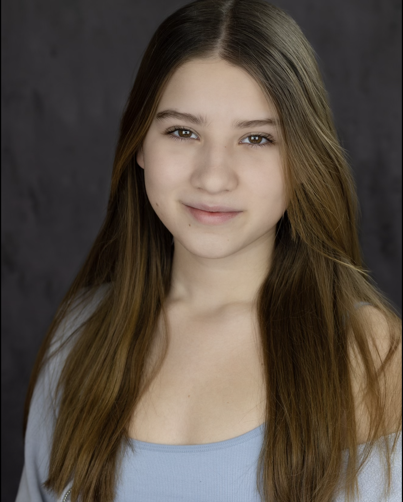
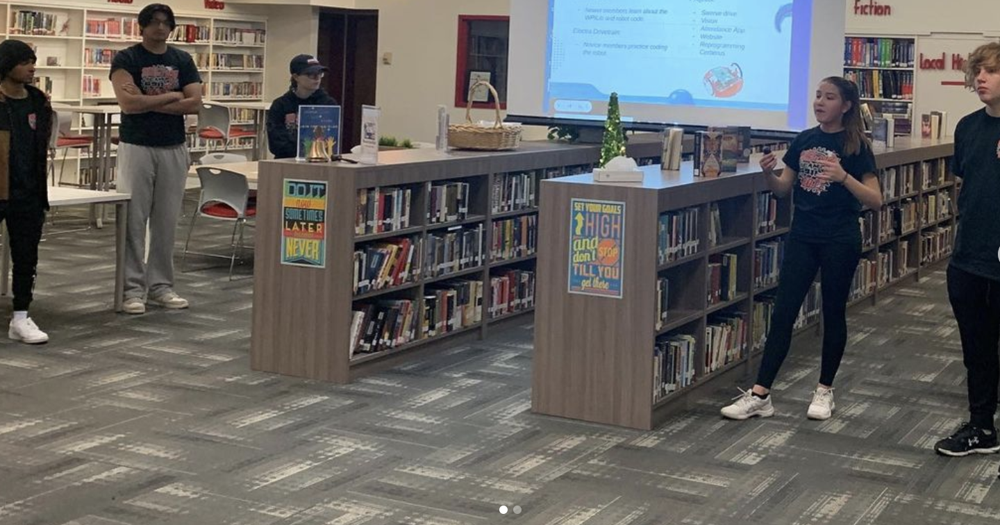

About Me
My name is Molly Culot, I am 16 years old and a junior at Tappan Zee High School. I started programmming
in my freshman year, and made several applications in my free time. Going into my sophomore year, I joined
every computer science related extra-curricular my school had to offer. Finally, in my junior year I continued
to take on leadership roles in these activities, and starting some new ones of my own. When I'm not coding,
I enjoy playing the guitar, playing tennis, working at starbucks, and organizing.

Robotics
I joined my high school robotics team in the 2021 preseason when the competition was infinate
recharge. I attended two preseason competitions where I was the technician on drive team B
for the first one and the technician on drive team A for the second one. During the 2022 season,
I assisted with programming different aspects of the robot including the serializer and the color
sensor. I was the technician for these compeitions. The following year, I was chosen as the
project manager for my team and I became a coach on the drive team.
Leadership
Throughout my time in high school, I took on multiple leadership roles my junior including the
robotics team Project Manager, Computer Science Club President, Computer Science Honor Society
Treasurer, and I became a delegate for my school's Student Government.

SO BOTZ Parent Night (2022)

IT DEFENITLEY DIDNT TAKE ME THREE HOURS TO FIGURE OUT HOW TO DO THIS
Internships and Jobs
During my sophomore year, I took on my first internship as a web developer for the Turtles of Western
Highway and assisted them in any digital issues they had. During the summer, I began an internship with the
company ACUE, which is The Association of College and University Educators. Their motto is "Student success through
exceptional teaching."